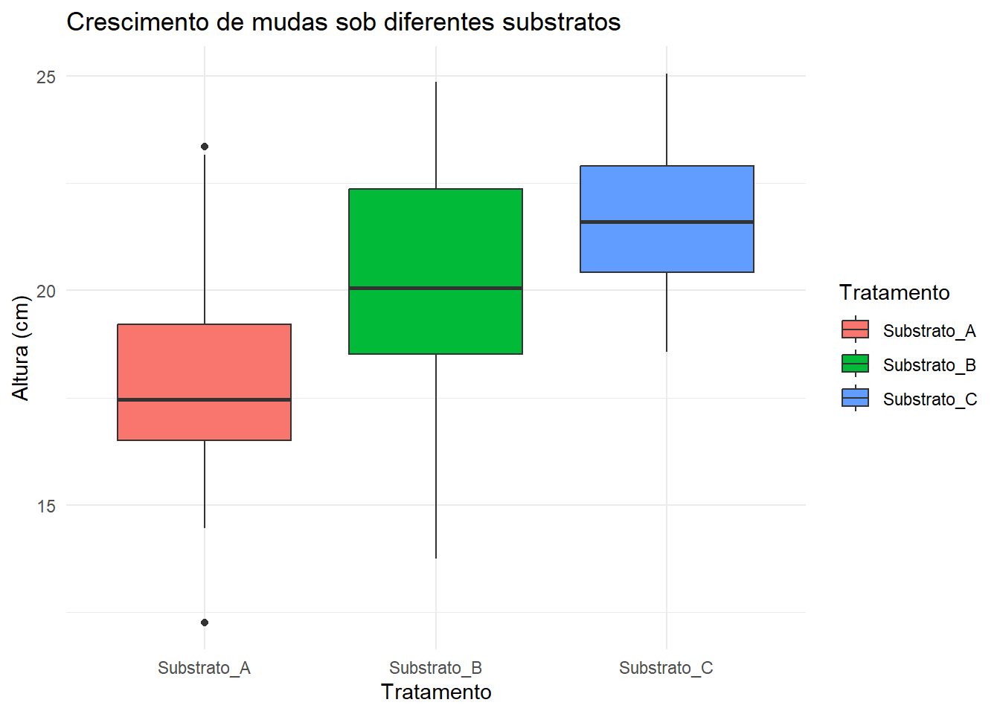

Código
# Instalação no Colab (rode manualmente lá, se necessário)
options(repos = "https://cloud.r-project.org")
install.packages(c("readr","ggplot2","dplyr","agricolae","emmeans","multcompView"))(Módulo 1 – Semana 1)
Imagine que você está iniciando a disciplina de Estatística Experimental e nunca utilizou o R antes. Agora, pense que você trabalha como engenheiro(a) florestal em um viveiro que produz mudas para restauração de áreas degradadas. Um fornecedor oferece um novo substrato “revolucionário” que promete aumentar o crescimento das mudas em 20%.
Você precisa decidir se vale a pena trocar o substrato atual — mas como saber se essa promessa é real ou apenas marketing?
💡 É aqui que a Estatística Experimental entra em cena: ela permite planejar um teste, coletar dados e analisar resultados para concluir, com segurança, se a diferença observada é de fato causada pelo tratamento ou apenas fruto do acaso.
Ao final deste capítulo, você será capaz de:
Passos iniciais (para estudantes):
💡 Instalação de pacotes no Colab (rode apenas no Colab): O bloco abaixo não é executado ao compilar o ebook (serve apenas para consulta). No Colab, selecione a célula e rode-a.
# Instalação no Colab (rode manualmente lá, se necessário)
options(repos = "https://cloud.r-project.org")
install.packages(c("readr","ggplot2","dplyr","agricolae","emmeans","multcompView"))Na Engenharia Florestal, decisões técnicas e econômicas dependem de dados:
Essas decisões não podem se basear apenas em experiência ou intuição — precisam ser sustentadas por evidências experimentais obtidas em experimentos bem planejados.
Vamos visualizar dados de crescimento de mudas sob três tratamentos diferentes de substrato.
💡 Usando no Colab: Após fazer upload do CSV, troque o caminho por "/content/nome_do_arquivo.csv". No ebook/Quarto local, mantenha o caminho relativo dados/nome_do_arquivo.csv.
# Carregar pacotes sem mensagens de inicialização
suppressPackageStartupMessages({
library(readr)
library(ggplot2)
})
# Ebook/Quarto (caminho relativo)
dados <- read_csv("dados/crescimento_mudas.csv", show_col_types = FALSE)
# Para Colab, use:
# dados <- read_csv("/content/crescimento_mudas.csv", show_col_types = FALSE)
# Visualizar amostra (sem mensagens de leitura)
head(dados)# A tibble: 6 × 6
ID Tratamento Altura_cm Diametro_mm Biomassa_g Dias_pos_semeadura
<chr> <chr> <dbl> <dbl> <dbl> <dbl>
1 Substrato_A_01 Substrato_A 12.3 3.5 9.13 80
2 Substrato_A_02 Substrato_A 21.0 4 13.0 82
3 Substrato_A_03 Substrato_A 16.7 3.94 12.0 92
4 Substrato_A_04 Substrato_A 16.6 3.81 10.2 83
5 Substrato_A_05 Substrato_A 19.5 3.97 15.3 97
6 Substrato_A_06 Substrato_A 16.1 4 11.1 80# Criar boxplot
ggplot(dados, aes(x = Tratamento, y = Altura_cm, fill = Tratamento)) +
geom_boxplot() +
labs(title = "Crescimento de mudas sob diferentes substratos",
x = "Tratamento", y = "Altura (cm)") +
theme_minimal()
O boxplot mostra a distribuição das alturas em cada tratamento.
Você recebeu dados de um experimento de irrigação em mudas de Cedrela fissilis, com três regimes hídricos (Baixo, Médio, Alto).
💡 No Colab: após o upload, use "/content/cedrela_irrigacao.csv".
Tarefas:
✅ Dica para o relatório (Colab): Inclua no notebook:
/content/...)Assim, você já inicia o relatório final da disciplina desde a primeira semana.